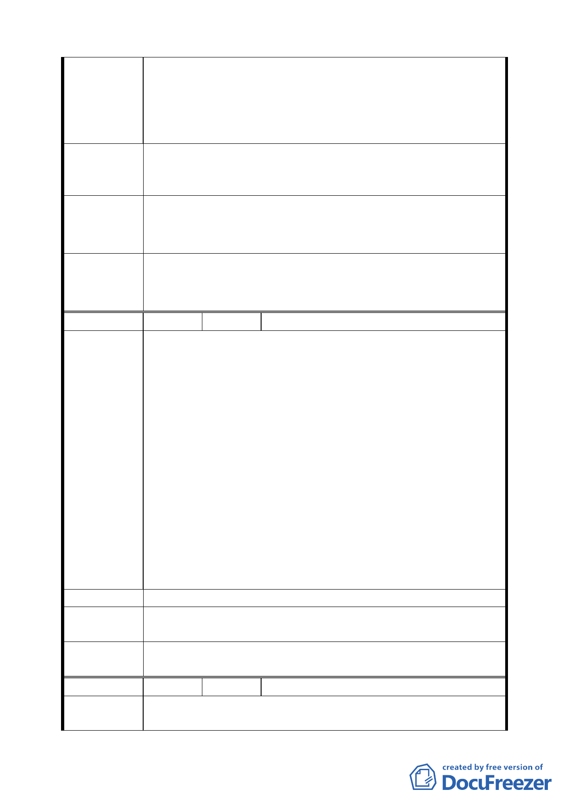

局不想管，陽明大學管不到，居民不知道怎麼管的「三
不管」地區。
三、 此水利地狹長型，與淡水捷運線交叉而過；當年圳溝負
有灌溉及排水雙重用途。而今因捷運之興建及都市之發
展，圳溝多已淤塞填平。
依據「公有閒置土地規劃為鄰里性公園」之精神，將北投區
建 議 辦 法 振興段 4 小段 0650-0001 至 0650-0011 地號北側之水利地規
劃為鄰里公園。
94.5.26 第 13 次專案會議結論：有關北投區振興段 4 小段
專案小組
結論
647、647-1、647-2、648、656、658 地號土地，建議維持住
宅區，並請管理單位應予管理維護。
原則同意該範圍土地朝開放空間方式處理，並於計畫案內予
委員會議
決議
以規範，有關都市計畫部分建議由陽明大學協調取得周邊畸
零土地後，另以個案方式辦理變更。
編 號 ９ 陳情人 鄧金輝
一、北投區西安街 1 段 313 巷 16 弄規劃綠地位於石牌捷運線
旁，地號為文林段四小段道 459、458、457、456、455、
454 道 431、436 道 116、73-3 一線。
二、該規劃綠地現況為柏油路面之 10 米寬道路，兩旁停滿車
輛，令臨近榮光市場，車輛進出頻繁。
三、該規劃綠地上戶政單位已編為巷弄，其內且有數條無名
小道，以其為對外聯通之道，如設綠地必影響民眾進出。
陳 情 理 由 四、規劃綠地周邊開發較早，其內為早期榮光新村一至三村，
區內之房舍屋齡均逾 30 年以上，如 313 巷 16 弄規劃為
綠地，即無法取得建築線，影響地區更新。
五、石牌地區規劃綠地近十處之多，榮光一里即有三處，是
否過多，實應檢討。另區內 313 巷 16 弄早期有軍方興建
之居安新 村，房舍均逾 35 年以上，不但破舊且坪數小，
如規劃綠地，其間 16 棟 48 戶人家，在有建物產權，而
無地上權之情況下，改建遙遙無期。
建 議 辦 法 請將北投區西安街一段 313 巷 16 弄綠地變更為道路用地。
專 案 小 組 94.4.14 專案小組第十二次審查會議：同意發展局規劃仍為綠
結 論 地，唯可供車行及指定建築線。
委員會議
決議
同意依專案小組審查結論辦理。
編 號 １０ 陳情人 魏曹養 93.11.30
陳情理由
一、民共有之土地文林段三小段，因細部計劃道路將土地割
成三個地號 522、522-1、522-2，致無法整體開發，因而
第 三八 頁，共 49 頁